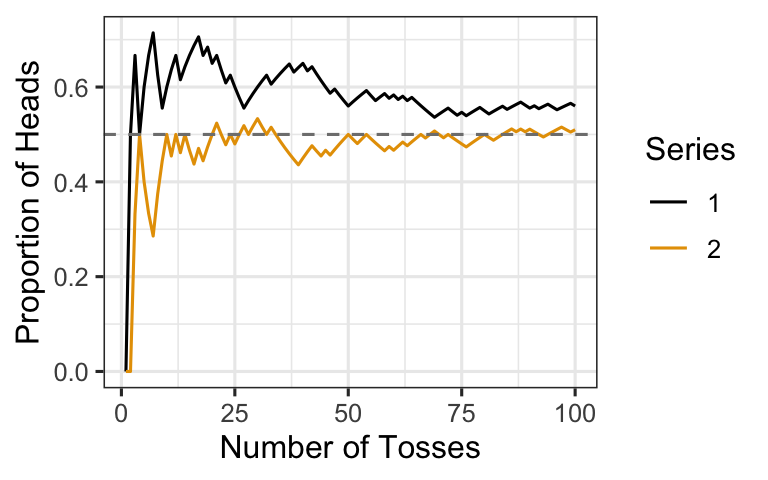
Probability Review
Randomness and Probability
Example 1
Toss a coin and record the result. What is the probability of heads? Tails?
\(P(\text{heads}) = 1/2 = 0.5\) and \(P(\text{tails}) = 1/2 = 0.5\).
Roll a 6-sided die and record the result. What is the probability of getting a 1? A 2? Etc.
\(P(1) = P(2) = P(3) = P(4) = P(5) = P(6) = 1/6 \approx 0.167\).
Toss two coins (or one coin twice). What is the probability of getting two heads?
The sample space is {HH, HT, TH, TT}. Since each outcome is equally likely and only one gives HH: \(P(\text{HH}) = 1/4 = 0.25\).
What does it mean that there is a 10% chance of rain today?
If we could replay today’s weather conditions a very large number of times, it would rain in about 10% of those scenarios.
A phenomenon is random if individual outcomes are uncertain, but there is nonetheless a regular distribution of outcomes in a large number of repetitions. The probability of any outcome of a random phenomenon can be defined as the proportion of times the outcome would occur in a very long series of repetitions.
The following plot shows the running proportion of heads in two simulated sequences of 100 coin tosses. Both converge toward 0.5 as the number of tosses increases.
Probability distributions or models describe random processes and consist of two parts:
- A list of all possible outcomes (called the sample space)
- The probability of each outcome
Example 2
Give the probability distribution for Example 1b (rolling a 6-sided die).
| Outcome | 1 | 2 | 3 | 4 | 5 | 6 |
|---|---|---|---|---|---|---|
| Probability | 1/6 | 1/6 | 1/6 | 1/6 | 1/6 | 1/6 |
Example 3
Suppose you count the number of heads after two flips of a coin. Find the probability distribution of the number of heads.
The sample space for two flips is {HH, HT, TH, TT}. Counting heads in each outcome:
| \(X\) = # Heads | 0 | 1 | 2 |
|---|---|---|---|
| Probability | 1/4 | 2/4 | 1/4 |
Distributions are frequently described by their histogram or density curve.
Example 4
Suppose the probability distribution (model) of \(X\) = the number of minutes that a randomly selected student uses their cell phone (for any purpose) in a given hour has the density shown below. Describe the distribution of \(X\). (Note: \(X\) is called a random variable.)
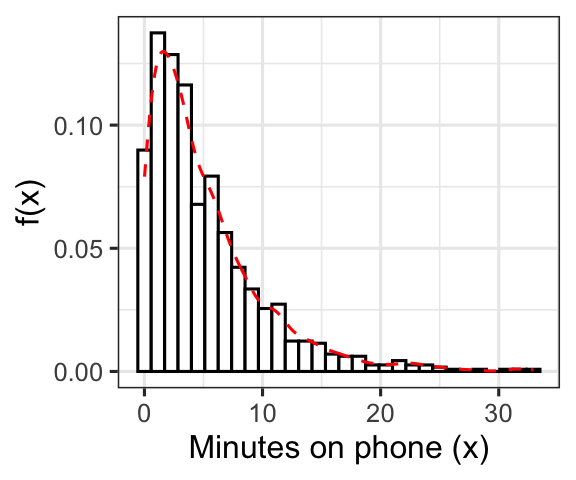
The distribution of \(X\) is right-skewed: most students use their phone for a short duration, but a few use it for much longer. There is a single mode near zero and a long right tail.
Probability Distributions of a Population
- Distributions describe behavior: the values a random variable can take and how likely it is to take on those values.
- Probability histograms or density curves (called pdf, probability density function) provide graphical descriptions of probability distributions.
- The area under the density curve between two points gives the probability that the random variable falls between those values. The total area under any density curve equals 1.
Probability Rules — Let \(A\) be an event.
- \(0 \leq P(A) \leq 1\)
- \(P(A^c) = 1 - P(A)\), where \(A^c\) is the complement of \(A\).
- \(P(A \text{ or } B) = P(A) + P(B)\), provided \(A\) and \(B\) are disjoint. Two events are disjoint if they have no outcomes in common and cannot occur simultaneously.
Example 5
The event \(A\) = “flip exactly two heads” and event \(B\) = “flip exactly two tails.” Are \(A\) and \(B\) disjoint? If so, what is \(P(A \text{ or } B)\)?
\(A\) and \(B\) are disjoint because they cannot both occur on the same pair of flips. By the addition rule for disjoint events: \[P(A \text{ or } B) = P(A) + P(B) = \frac{1}{4} + \frac{1}{4} = \frac{1}{2}\]
- \(P(A \text{ and } B) = P(A) \cdot P(B)\), provided \(A\) and \(B\) are independent. Two events are independent if knowing that one occurs does not change the probability that the other occurs.
Example 6
Let \(T\) = “get tails on the first toss” and \(H\) = “get heads on the second toss.” Are \(T\) and \(H\) independent? If so, what is \(P(T \text{ and } H)\)?
\(T\) and \(H\) are independent because the outcome of the first toss has no effect on the second toss. Therefore: \[P(T \text{ and } H) = P(T) \cdot P(H) = \frac{1}{2} \cdot \frac{1}{2} = \frac{1}{4}\]
Some Famous Distributions
Normal
- R functions:
dnorm(),pnorm(),qnorm(),rnorm() - \(\mu\) = mean (center of the distribution)
- \(\sigma^2\) = variance; larger variance means more spread out.
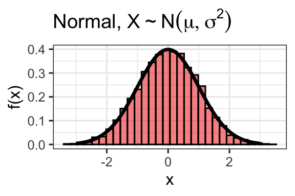
t-Distribution
- R functions:
dt(),pt(),qt(),rt() - \(\nu\) (or \(df\)) = degrees of freedom; smaller \(df\) gives heavier tails.
- Mean is always 0; shape resembles the normal but with more probability in the tails.
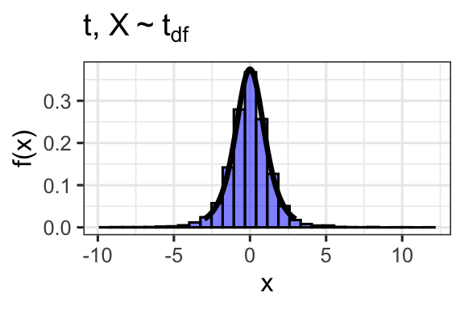
Chi-Squared
- R functions:
dchisq(),pchisq(),qchisq(),rchisq() - \(\nu\) (or \(df\)) = degrees of freedom; smaller \(df\) implies more spread out.
- Always non-negative and right-skewed, especially for small \(df\).
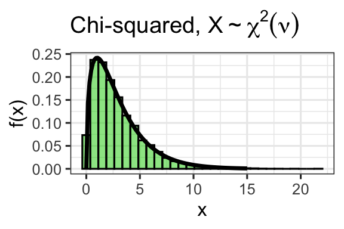
Exponential
- R functions:
dexp(),pexp(),qexp(),rexp() - \(\lambda\) = rate parameter; larger \(\lambda\) implies shorter typical durations.
- Often used for waiting-time questions: “How long until a light bulb fails?”
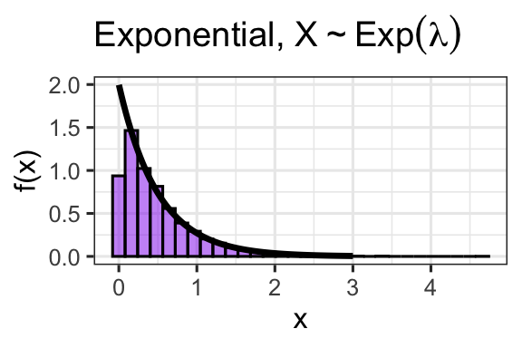
Binomial
- R functions:
dbinom(),pbinom(),qbinom(),rbinom() - \(n\) = number of trials, \(p\) = probability of success on each trial.
- Use when: (i) there are \(n\) independent trials, (ii) each results in success or failure, and (iii) the probability of success is \(p\) for every trial.
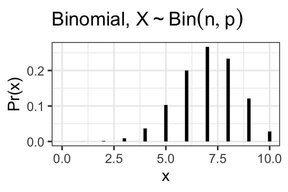
Uniform
- R functions:
dunif(),punif(),qunif(),runif() - \(a\) = lower bound, \(b\) = upper bound.
- Every value in \([a, b]\) has equal probability density.
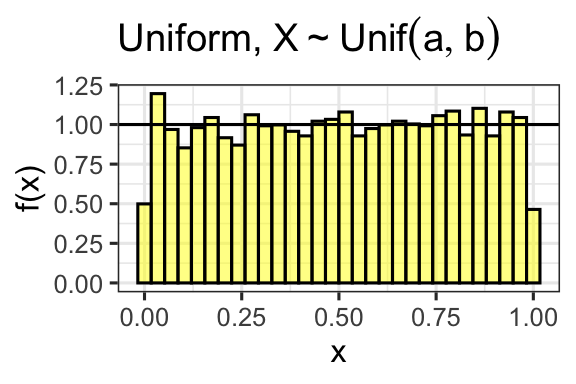
Poisson
- R functions:
dpois(),ppois(),qpois(),rpois() - \(\lambda\) = rate; both the mean and variance equal \(\lambda\).
- Used for count data: “How many phone calls will we receive in the next hour?”
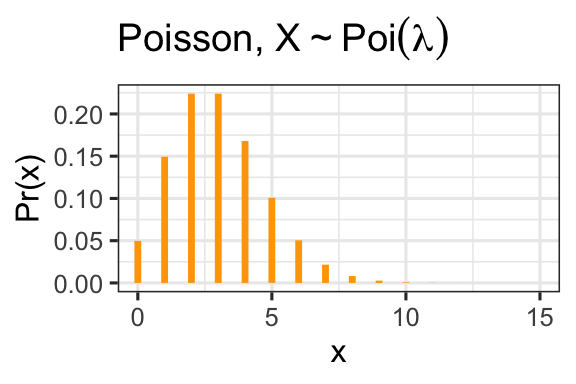
The Normal Distribution in Depth
Density Function
The normal distribution \(N(\mu, \sigma^2)\) has density: \[f(x \mid \mu, \sigma^2) = \frac{1}{\sqrt{2\pi\sigma^2}} \exp\!\left(-\frac{(x - \mu)^2}{2\sigma^2}\right)\]
- Mean \(\mu\): shifts the curve left or right along the \(x\)-axis without changing shape.
- Standard deviation \(\sigma\): stretches or squeezes the curve.
Normal density curves with different means (same \(\sigma = 2\)):
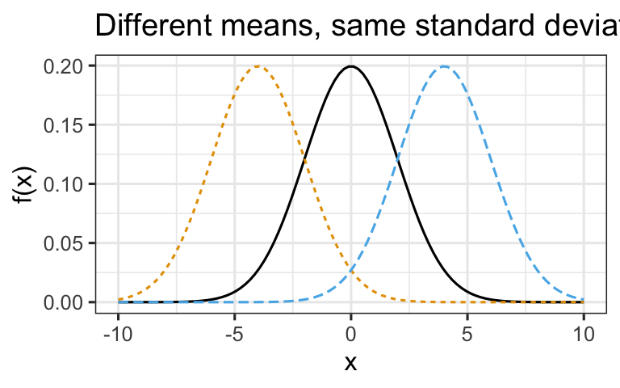
Normal density curves with different standard deviations (same \(\mu = 0\)):
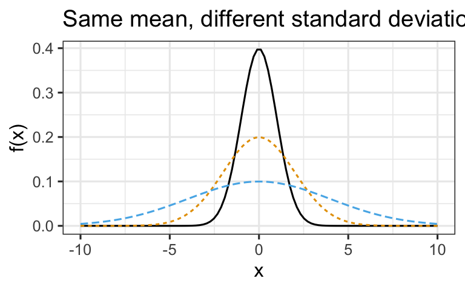
The 68–95–99.7 Rule
For any \(N(\mu, \sigma^2)\) distribution:
- Approximately 68% of observations fall within \(1\sigma\) of \(\mu\)
- Approximately 95% of observations fall within \(2\sigma\) of \(\mu\) (exactly 1.96\(\sigma\))
- Approximately 99.7% of observations fall within \(3\sigma\) of \(\mu\)
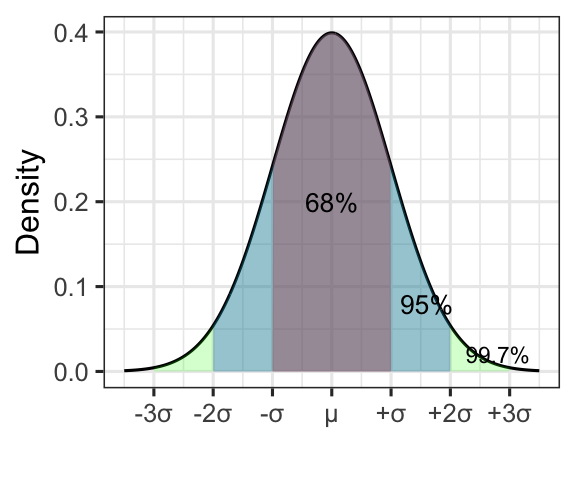
Standardization
A variable \(X \sim N(\mu, \sigma^2)\) can be standardized to \(Z \sim N(0, 1)\) by: \[z = \frac{x - \mu}{\sigma}\]
Standardizing lets us compare observations from different normal distributions and use a single table (the standard normal table) or R to find any probability.
Example: Calf Circumference
Suppose the calf circumference of adults is approximately: \[X \sim N(\mu = 37,\ \sigma^2 = 25) \quad \text{(cm, so } \sigma = 5\text{)}\]
What is the probability that a randomly selected person has a calf circumference less than 37 cm?
Since 37 cm is the mean, and the normal distribution is symmetric about its mean: \[P(X < 37) = 0.5\]
What proportion has calf circumference greater than 37 cm?
By the complement rule: \[P(X > 37) = 1 - P(X < 37) = 0.5\]
What is the probability of a calf circumference between 27 cm and 47 cm?
Note \(27 = 37 - 2(5) = \mu - 2\sigma\) and \(47 = 37 + 2(5) = \mu + 2\sigma\). By the 68–95–99.7 rule: \[P(27 < X < 47) \approx 0.95\]
What is the probability that two independently selected adults each have a calf circumference greater than 47 cm?
First, \(P(X > 47) = P(X > \mu + 2\sigma) = (1 - 0.95)/2 = 0.025\).
Since the individuals are independent: \[P(\text{both} > 47) = 0.025 \times 0.025 = 0.000625\]
Computing Probabilities in R
For \(X \sim N(\mu, \sigma^2)\), pnorm(q, mean, sd) returns \(P(X < q)\).
Note: R takes the standard deviation \(\sigma\), not the variance \(\sigma^2\).
Let \(X \sim N(37, 25)\). Find \(P(X < 30)\).
pnorm(30, mean = 37, sd = 5)[1] 0.08075666Let \(X \sim N(37, 25)\). Find \(P(30 < X < 35)\).
\[P(30 < X < 35) = P(X < 35) - P(X < 30)\]
pnorm(35, mean = 37, sd = 5) - pnorm(30, mean = 37, sd = 5)[1] 0.2638216Use qnorm(p, mean, sd) to find the \(p\)th quantile.
At what value do 20% of individuals have a smaller calf circumference?
We need the 20th percentile of \(N(37, 25)\), which we find with qnorm():
qnorm(0.20, mean = 37, sd = 5)[1] 32.79189About 32.8 cm.